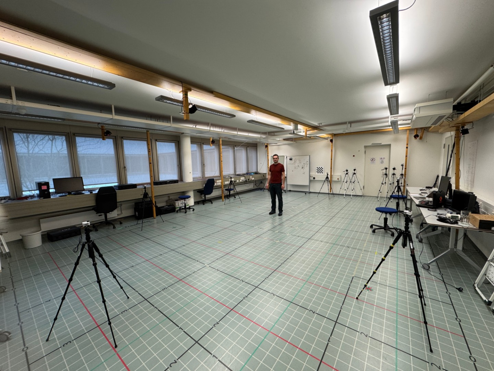

Passive UWB

Passive indoor target localization using channel impulse responses collected by a UWB mesh network.
Overview
Passive UWB uses a multi-static UWB mesh to localize moving targets without requiring them to carry an active tag.
The dataset was recorded in an office-like 11 × 8 m room using three different participants. Each recording includes UWB channel observations, IMU measurements and optical reference data.
Measurement setup
Six DW1000-based UWB nodes form a network with four transceivers and two receivers, yielding 14 radio links. The system uses a center frequency of 4.5 GHz and 499.99 MHz bandwidth.
CIRs contain 90 samples (1 ns spacing) and are recorded at 40 Hz. Optical ground truth is recorded with sub-centimeter accuracy.
Data format & contents
- HDF5 CIR data: CIR_R, CIR_I, timestamp, fpi, B_ID, REC_ID and TRANS_ID.
- HDF5 reference data: POS X/Y/Z, ROT X/Y/Z and timestamp.
- IMU measurements are provided as separate CSV files.
- Three sessions: take1 (40 min, ≈70,000 samples), take2 (20 min, ≈35,000), take3 (10 min, ≈17,000).
Download files
Download links to the published data files are provided below. Large datasets are not included in the GitHub Pages repository.
How to cite
Please cite the associated research publication when using this dataset.
@inproceedings{poeggel2025passive,
title = {Passive, Chanel Charting: Locating Passive Targets using a UWB Mesh},
author = {Poeggel, Raffael and Stahlke, Maximilian and Pirkl, Jonas and Ott, Jonathan and Yammine, George and Feigl, Tobias and Mutschler, Christopher},
booktitle = {2025 International Conference on Indoor Positioning and Indoor Navigation (IPIN)},
year = {2025}
}Fraunhofer IIS
This dataset is published in cooperation with Fraunhofer IIS. Additional release details and supporting material are available on the Fraunhofer IIS dataset page.